Cátedra 6: Primera Ley de la Termodinámica
Conservación de la energía en procesos termodinámicos: la energía interna es función de estado, mientras que el calor y el trabajo son diferenciales inexactos que dependen del proceso.
Temas que cubre
- Experimento de Joule con paletas: medición del equivalente mecánico del calor
- Definición de calor $Q$: diferencia entre $\Delta U$ y el trabajo $W$
- Primera Ley: $dU = \bar{\delta}Q + \bar{\delta}W$
- Energía interna $U$: función de estado (no depende del proceso)
- Trabajo y calor: diferenciales inexactos (dependen del proceso)
- Notación con rayita: $\bar{\delta}Q$, $\bar{\delta}W$ para diferencial inexacto
- Convenio de signos: $\bar{\delta}W > 0$ cuando se realiza trabajo sobre el sistema
Conceptos clave
Energía interna $U$
$U$ es una función de estado: su diferencia $\Delta U$ depende solo del estado inicial y del estado final, no de cómo se llegó de uno al otro. Para el gas ideal monoatómico, $U = \frac{3}{2}Nk_BT$.
Calor $Q$
El calor es la energía que se transfiere entre dos sistemas por la agitación microscópica de sus constituyentes (sin movimiento macroscópico). $Q$ no es función de estado: depende del proceso.
Trabajo $W$
El trabajo termodinámico es la energía transferida mediante movimientos macroscópicos (p.ej. comprimir un pistón). Tampoco es función de estado: depende del camino. La fricción hace que el trabajo real sea siempre mayor que el mínimo teórico.
Diferencial inexacto
Se escribe $\bar{\delta}Q$ y $\bar{\delta}W$ (con rayita) para indicar que no son diferenciales exactos: no existe una función cuya diferencial sea $\bar{\delta}Q$ o $\bar{\delta}W$. Su suma $\bar{\delta}Q + \bar{\delta}W = dU$ sí es diferencial exacta.
Fórmulas fundamentales

Qué hay que entender
- La Primera Ley es conservación de energía: $\Delta U$ del sistema = calor que entra + trabajo que se le hace.
- El convenio de signos importa: en estas notas, $\bar{\delta}W > 0$ significa trabajo sobre el sistema (compresión). Algunos libros usan el convenio opuesto.
- $U$ es función de estado, pero $Q$ y $W$ por separado no lo son. Dos procesos con el mismo $\Delta U$ pueden tener valores muy distintos de $Q$ y $W$.
- La rayita $\bar{\delta}$ es una notación importante: recuerda que $Q$ y $W$ dependen del camino, no del estado final y del inicial.
- Para el gas ideal isotérmico: $\Delta U = 0$ (pues $U$ depende solo de $T$), entonces $Q = -W$: todo el calor absorbido se convierte en trabajo.